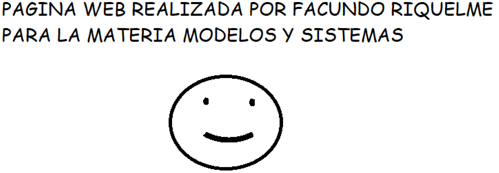

- DCU
- Ejercicio 1Ejercicio 2Ejercicio 3
ENUNCIADO
DIAGRAMA DE CASO DE USO CAJERO AUTOMÁTICO
Sistema cajero automático: el cliente, mete la tarjeta, digita el pin o contraseña, selecciona monto,
el cajero le da dinero al cliente, el cliente obtiene un recibo con el movimiento y saldo. El cajero queda vacío y un empleado recarga posteriormente el cajero.IMAGEN DEL EJERCICIO
DESCARGAR EJERCICIO
ENUNCIADO
DIAGRAMA DE CASO DE USO DE UNA INMOBILIARIA
Una inmobiliaria gestiona un conjunto de inmuebles, que administra en calidad de propietaria. Cada inmueble puede ser, un local (local comercial, oficinas, etc.), un piso o bien un edificio que a su vez tiene pisos y locales. Como el número de inmuebles que la empresa gestiona no es un número fijo, la aplicación debe permitir tanto introducir inmuebles nuevos, así como darlos de baja, modificarlos y consultarlos. Asimismo, que una empresa administre un edificio determinado no implica que gestione todos sus pisos y locales, por lo que la aplicación también deberá permitir introducir nuevos pisos o locales, darlos de baja, modificarlos y hacer consultas sobre ellos. Cualquier persona que presente un recibo de sueldo, un aval bancario o un garante solvente que presente recibo de sueldo, podrá alquilar el edificio completo o alguno de los pisos o locales que no estén ya alquilados, y posteriormente desalquilarlo. Por ello, deberán poder ser dados de alta, si son nuevos inquilinos, con sus datos correspondientes (nombre y apellido, DNI, tel/cel, cuil, etc) poder modificarlos, darlos de baja, consultarlos, etc. La aplicación ofrece acceso web para que un inquilino pueda modificar o consultar sus datos, pero no darse de baja o de alta. Para la realización de cualquiera de estas operaciones es necesaria la identificación por parte del inquilino en el sitio.IMAGEN DEL EJERCICIO

DESCARGAR EJERCICIO
ENUNCIADO
DIAGRAMA DE CASO DE USO SISTEMA DE VENTA POR CATÁLOGO
Los clientes hacen pedidos que recibe el departamento comercial y la empresa los sirve lo antes posible;
y además ellos también pueden devolver productos y cancelar pedidos. Analizar la identificación de actores
y casos de usos, efectuar el diagrama de caso de uso y describir como es el sistema que se implementara.IMAGEN DEL EJERCICIO
DESCARGAR EJERCICIO
{kind=link}
{kind=link}